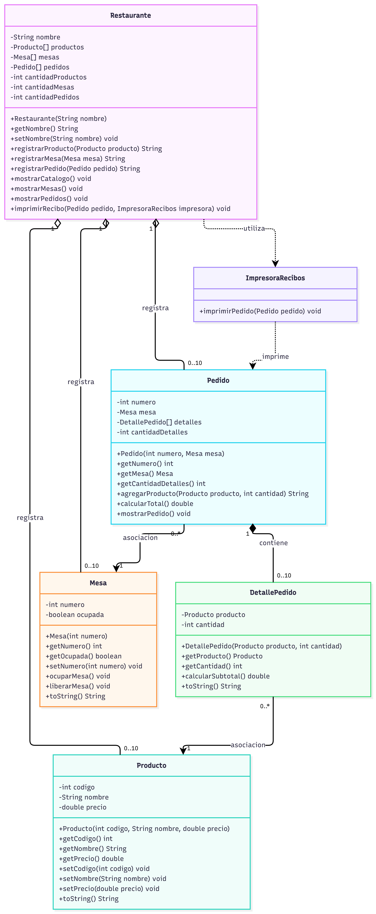

Primer Avance del Portafolio de Evidencias de Programación Orientada a Objetos
Universidad CENFOTEC
Estudiante: Alejandro Medrano Ruiz
Sabores de Heredia es un sistema didáctico desarrollado para organizar los pedidos de un restaurante mediante los principios de Programación Orientada a Objetos.
El sistema permite registrar productos, administrar mesas, crear pedidos, calcular totales y mostrar recibos.
Su implementación utiliza clases Java que representan entidades del mundo real, con atributos, métodos y relaciones.
Cada producto contiene un código, un nombre y un precio.
Permite identificar las mesas del restaurante y consultar su estado de ocupación.
Los pedidos contienen productos y cantidades solicitadas por los clientes.
El sistema muestra un resumen del pedido y su importe total.
Se seleccionó un sistema de gestión de pedidos para restaurante porque representa una situación cotidiana que puede modelarse mediante Programación Orientada a Objetos.
En un restaurante es necesario identificar productos, registrar pedidos, administrar mesas y calcular los importes correspondientes.
Estas operaciones permiten reconocer entidades con características y comportamientos propios.
La elección también permite aplicar conocimientos adquiridos en Programación 2 y Programación Orientada a Objetos, especialmente clases, objetos, constructores, atributos privados, métodos públicos, arreglos y relaciones entre objetos.
Desarrollar una solución básica de gestión de pedidos utilizando los principios de abstracción, encapsulamiento y relaciones entre objetos.
Cada clase representa solamente los atributos y comportamientos necesarios para el sistema.
Ejemplo: Producto contiene código, nombre y precio.
Los atributos se declaran privados y se utilizan métodos públicos para controlar su acceso.
Ejemplo: getPrecio() y setPrecio().
El sistema divide sus responsabilidades entre distintas clases Java.
Restaurante registra objetos Producto, Mesa y Pedido creados independientemente.
Pedido crea y administra sus propios objetos DetallePedido.
Restaurante utiliza ImpresoraRecibos cuando necesita mostrar un recibo.
Pedido mantiene una referencia a Mesa y DetallePedido mantiene una referencia a Producto.
El diagrama UML representa la estructura del sistema, incluyendo sus clases, atributos, métodos y relaciones.
Restaurante, Producto, Mesa, Pedido, DetallePedido e ImpresoraRecibos.

El rombo blanco representa relaciones de agregación.
El rombo negro representa la composición entre Pedido y DetallePedido.
Las líneas discontinuas con flecha representan dependencias entre clases.
Las líneas continuas representan asociaciones entre objetos.
Los símbolos de acceso indican encapsulamiento: el signo menos identifica atributos privados y el signo más identifica métodos públicos.
Se crean objetos Restaurante, Producto y Mesa utilizando sus respectivos constructores.
El restaurante registra los productos y las mesas dentro de sus arreglos.
Se crea un pedido asociado con una mesa y se agregan productos con sus cantidades.
DetallePedido calcula el subtotal de cada producto. Pedido suma los subtotales y obtiene el importe final.
ImpresoraRecibos utiliza la información de Pedido para mostrar el resumen en la consola.
Pedido 101: 2 hamburguesas y 1 jugo natural.
Hamburguesas: ₡7 000
Jugo natural: ₡1 200
Total: ₡8 200
Pedido 102: 1 casado.
Total: ₡4 000
El sistema fue desarrollado en Java utilizando IntelliJ IDEA.
El proyecto contiene siete archivos Java:
Restaurante utiliza arreglos para registrar productos, mesas y pedidos.
Pedido utiliza un arreglo de objetos DetallePedido para almacenar los productos solicitados.
Los constructores permiten inicializar los atributos de los objetos cuando son creados.
Los atributos privados protegen la información de las clases.
Los métodos públicos permiten consultar o modificar información bajo las condiciones definidas en cada clase.
El programa utiliza condiciones para verificar cantidades válidas, referencias nulas y disponibilidad de espacio en los arreglos.
Los datos se mantienen temporalmente en memoria. Esta versión no utiliza bases de datos.
El atributo precio es privado y su modificación se controla mediante un setter.
private double precio;
public void setPrecio(double precio) {
if (precio >= 0) {
this.precio = precio;
}
}Restaurante registra un objeto Producto que fue creado independientemente.
productos[cantidadProductos] = producto;
cantidadProductos++;Pedido crea internamente sus objetos DetallePedido.
detalles[cantidadDetalles] =
new DetallePedido(producto, cantidad);
cantidadDetalles++;Restaurante utiliza ImpresoraRecibos como parámetro para imprimir un pedido.
public void imprimirRecibo(
Pedido pedido,
ImpresoraRecibos impresora) {
if (impresora != null) {
impresora.imprimirPedido(pedido);
}
}DetallePedido calcula el subtotal de un producto.
public double calcularSubtotal() {
return producto.getPrecio() * cantidad;
}Pedido suma los subtotales de sus detalles registrados.
public double calcularTotal() {
double total = 0;
for (int i = 0; i < cantidadDetalles; i++) {
total = total
+ detalles[i].calcularSubtotal();
}
return total;
}El código fuente del sistema estará disponible en un repositorio de GitHub.
El repositorio incluirá las clases Java, el diagrama UML, la documentación y el complemento visual digital.
Enlace al repositorio: